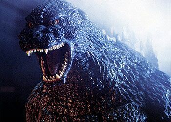

ยุคเฮเซย์ (Heisei Era: 1984-1995)
เริ่มต้น : ปี 1984 กับ The Return of Godzilla ที่เป็นการรีบูตเฟรนไชส์อย่างจริงจัง โดยกลับไปที่โทนมืดและจริงจังมากขึ้น
ธีมหลัก : ยุคนี้นำเสนอ Godzilla เป็นสัตว์ประหลาดที่น่าสงสารและทรงพลัง ซึ่งมักเกี่ยวข้องกับวิทยาศาสตร์และเทคโนโลยีที่เกินการควบคุมของมนุษย์ มีการแสดงถึงผลกระทบของนิวเคลียร์ในลักษณะที่วิทยาศาสตร์ควบคุมไม่ได้ เช่น การกลายพันธุ์
โทนเรื่องราว : โทนของหนังกลับมาจริงจังและมืดมนกว่าเดิม โดยให้ Godzilla เป็นตัวแทนของพลังทำลายล้างที่น่าสยดสยอง แต่ในขณะเดียวกันก็มีมิติของความเป็นสิ่งมีชีวิตที่น่าสงสาร หนังในยุคนี้มีเนื้อเรื่องที่ต่อเนื่องและพัฒนาไปอย่างเป็นลำดับ
จุดสิ้นสุด : ภาพยนตร์สุดท้ายในยุคนี้คือ Godzilla vs. Destoroyah (1995)
